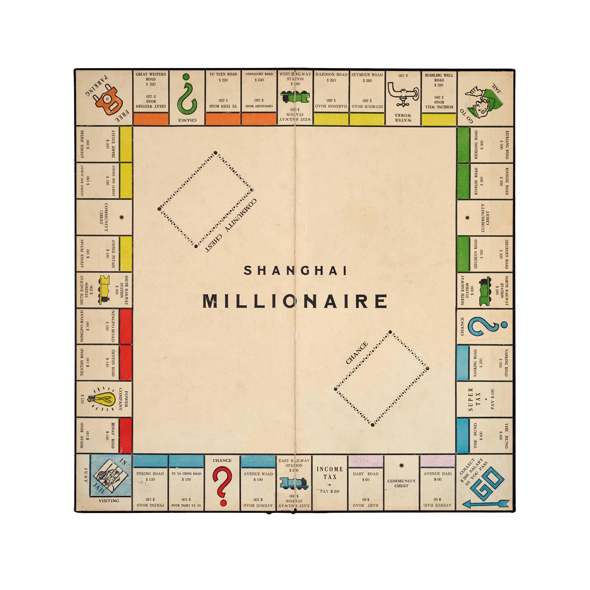
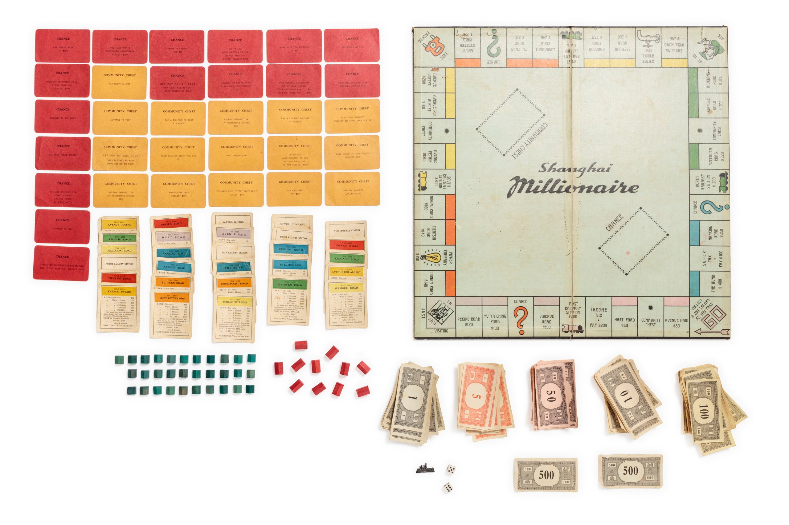
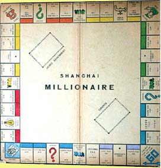
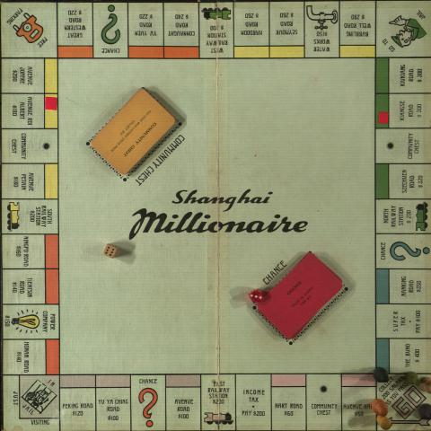
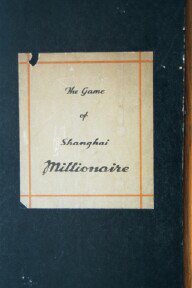
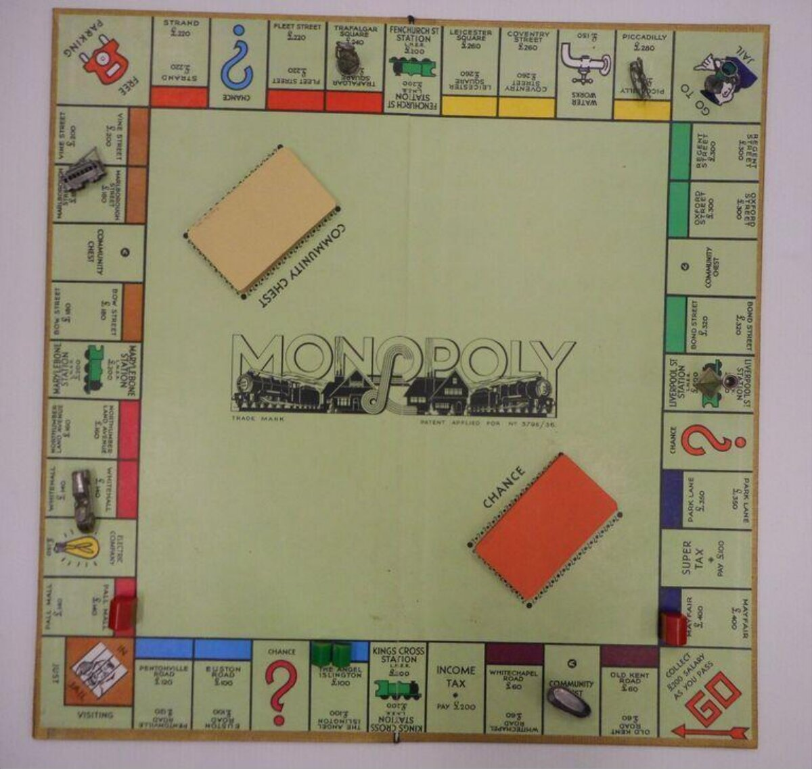
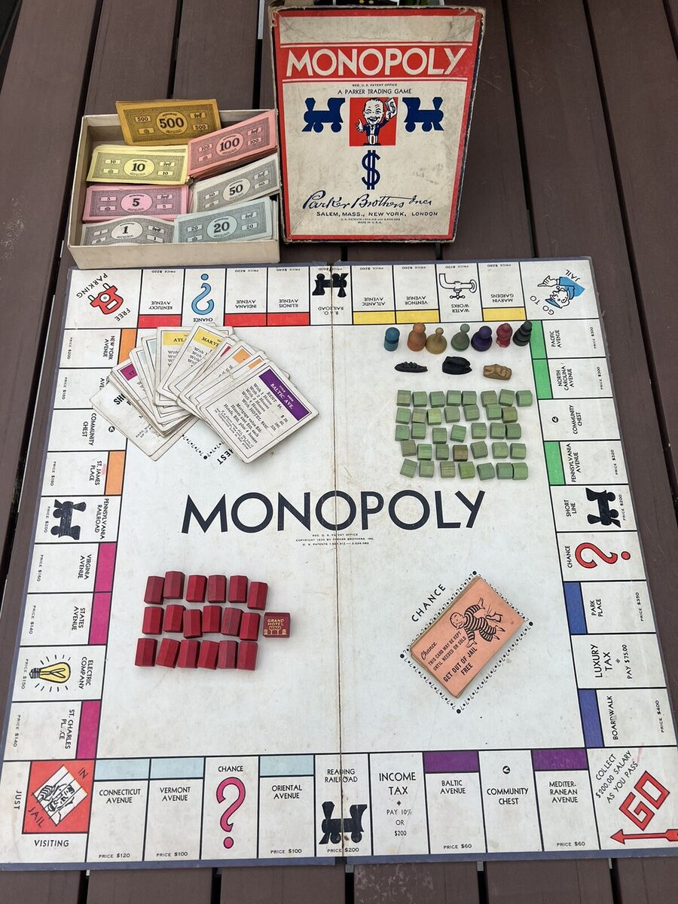

Sihang Collection Copy
A complete or near-complete commercial set used as this project's material baseline: board dimensions, street list, rulebook, cards, box, and print details.
Research Track 01
Two versions of Shanghai Millionaire survive — one commercially printed, one hand-drawn by refugee children.
| Name | The Game of Shanghai Millionaire |
|---|---|
| Estimated Date | ~1938–1940 |
| Manufacturer | Unknown (Shanghai) |
| Board Size | 48.5 × 48.5 cm |
| Language | English |
| Based On | Monopoly design family; Waddington route possible but unproven |
| Retail Clue | Recalled as sold in major department stores such as Wing On |
| Production | Commercial, mass-produced |
A well-printed, professionally manufactured game associated with Shanghai's English-language consumer world. It localizes Monopoly's property-trading system into Shanghai streets; a Waddington route remains plausible, but board layout alone does not prove it over Parker Brothers.
| Makers | Siegfried Lobel (14) & Manfred Lobel (10) |
|---|---|
| Date | 1946 |
| Location | Hongkew Ghetto, Shanghai |
| Board Size | 35.9 × 35.9 cm (14.125 inches) |
| Materials | US Army "K-ration" cardboard boxes, ink, pencils, colored pencils |
| Based On | Monopoly rules (likely from memory) |
| Current Location | United States Holocaust Memorial Museum (2009.106.1) |
| Donor | Manfred Lobel, 2009 |
Two German-Jewish refugee children, who fled Berlin for Shanghai in 1940, hand-drew their own version of the game a year after liberation. Made from ration boxes — a testament to the human need for play even in extremity.
No hard publication date survives for either game. The claims below come from collector catalogs, provenance narratives, and one independent material clue. This list is open — new sources will be added as they emerge.
| Source | Claim | Evidence Type | Key Detail |
|---|---|---|---|
| Source Models (Parent Games) | |||
| Parker Brothers, Atlantic City edition (first published Nov 1935) | Source model for Shanghai Real Estate — price structure matches exactly ($60–$400) | Design dependency | Real Estate copies Parker's price structure, board layout, and property-name pattern; confirms Nov 1935 Parker edition as the immediate source; sets earliest possible date for Real Estate at late 1935 |
| John Waddington Ltd, London edition (first published 1936) | Source model for Shanghai Millionaire — follows Waddington London board layout and naming | Design dependency | Millionaire follows Waddington London design features (Super Tax, Community Chest format, station orientation); Waddington London first published 1936, setting the earliest possible date for Millionaire |
| Shanghai Real Estate | |||
| Phil Orbanes, The Game Makers (2004, p.66) | "Soon after 1936" — Monopoly reached Shanghai, local publishers produced a version | Narrative | Orbanes was former VP of Parker Brothers R&D and the former owner of the Real Estate set; cited by Veldhuis |
| Albert C. Veldhuis, World of Monopoly catalog | ±1937 | Collector catalog | Most systematic global Monopoly variant cataloger; ± indicates approximation; personally examined the object |
| Dollar Line name on board (independent material evidence) | Printed before August 1938 | Hard evidence | Dollar Steamship Line was seized by US government in Aug 1938 and renamed American President Lines; board still uses old name — terminus ante quem |
| Parker Brothers price structure match | Source model is 1935 Parker Brothers edition ($60–$400 match exactly) | Design dependency | Exact price match with Nov 1935 Parker Brothers first edition; confirms Parker as source model, not Waddington |
| Shanghai Millionaire | |||
| Albert C. Veldhuis, World of Monopoly catalog | ±1940 | Collector catalog | Same source as Real Estate claim; ± indicates approximation |
| Gary Korzenstein provenance (via World of Monopoly, ~2001) | Board was in the family "during or before WWII" | Narrative | Korzenstein acquired the board from his brother's friend in Montreal; the friend's family fled Eastern Europe → Shanghai → Canada |
| Jewish refugee wave (historical context) | 1938–1941 (peak refugee arrival period) | Historical context | ~20,000 Jewish refugees arrived in Shanghai 1938–1941; Waddington-based design and refugee provenance align with this period |
| Waddington London edition (design dependency) | Earliest possible date is 1936 (Waddington London first published 1936) | Design dependency | Millionaire is based on Waddington London board; cannot predate its source model |
| Kent McKeever (2004, via World of Monopoly) | Commercial mass-produced (not handmade) | Physical examination | McKeever examined the box and components in 2004; confirmed commercial production; acquired the box belonging to the game board |
| Chronological Boundaries (Shared) | |||
| Japanese occupation of International Settlement (Dec 8, 1941) | No commercial printing of Western board games after Dec 1941 — Shanghai enters "isolated island" period | Historical context | Japanese forces entered the International Settlement on Dec 8, 1941 (day after Pearl Harbor); foreign concessions ceased to function; local commercial publishing of English-language Western games effectively ceased — terminus ante quem for both Real Estate and Millionaire |
Note: The Lobel brothers' handmade copy (1946) is excluded from the timeline above. It is a known hard date, but it dates a refugee-child's handmade reproduction, not the original commercial production.
Open for additions. This inventory is intentionally incomplete. As new dating claims emerge — from archival finds, newspaper advertisements, or future collector reports — they will be added here with full sourcing and evidence-type classification.
The surviving evidence points to several commercial copies, one handmade refugee-child copy, and at least one related Shanghai Monopoly-like variant. The comparison below separates confirmed objects from collector leads.

A complete or near-complete commercial set used as this project's material baseline: board dimensions, street list, rulebook, cards, box, and print details.

Museum record for a commercial set purchased in Shanghai between August 1945 and November 1946, then carried to Australia by a refugee family.
View source
Collector documentation of a commercial board with unknown Shanghai maker, a reported Waddington connection, and migration provenance through Eastern Europe, Shanghai, and Canada.
View sourceA 1946 hand-drawn refugee-child version from Hongkew, made from US Army ration-box cardboard. It proves copying practice, not commercial distribution.
View source
Archive description places a Shanghai Millionaire set in the Bell Family Collection, connected to wartime Shanghai and Chapei civilian internment context.
View source
A related 1930s Shanghai Monopoly-like game discussed by collectors. It is useful for manufacturing comparison, but should not be counted as a Shanghai Millionaire copy.
Full analysis →For internal research, these images are shown directly so board layout, title lettering, street order, color groups, and components can be compared side by side.
Clean front-board photograph from the project copy. Useful for baseline street order and price checking.
Full set view with board, title deeds, Chance/Community Chest cards, houses, hotels, money, dice, and token.
Lower-resolution but important collector image. It appears to match the commercial board layout closely.
Board shown with play pieces and card piles in place. Useful for comparing actual play presentation.

World of Monopoly's back-board image shows the black underside and white label, a possible material clue for future object comparison.
Related Shanghai property-trading game. Included for manufacturing and layout comparison, not as a Shanghai Millionaire copy.
Placed beside the British Waddington London board and the American Parker Brothers Atlantic City board, Shanghai Millionaire cannot be confidently assigned to either source by board layout alone. The Waddington link remains a hypothesis that requires stronger square-by-square and archival evidence.
| Person / source | Claim | Basis given on World of Monopoly | How we use it |
|---|---|---|---|
| Albert C. Veldhuis, World of Monopoly China catalogue page | Shanghai Millionaire is described as clearly based on Waddington's English/London design. | The page lists three Waddington-style features: station locomotives pointing anticlockwise; Community Chest spaces without the blue treasure-chest icon; Super Tax without the gold ring and diamond image. | Strong collector attribution, but not archival proof of the printer, license path, or production date. |
| Gary Korzenstein board, documented by World of Monopoly | Commercial board from a refugee-family provenance, reported as likely manufactured in Shanghai and sold in local stores. | World of Monopoly presents Korzenstein's account: he had the board for decades; it came through a family that fled Eastern Europe to Shanghai and later emigrated to Canada. | Useful for provenance and circulation, but the Waddington judgment still comes from visual comparison by the catalogue author. |
| Kent McKeever, Shanghai historian, cited on World of Monopoly | The box and components suggest commercial manufacture in larger quantities, not a handmade refugee copy. | The page notes that McKeever acquired the box and attributes belonging to the game board; the contents indicate commercial production beyond limited wartime handmade conditions. | Supports the commercial-edition status of Shanghai Millionaire; it does not by itself prove Waddington as the source design. |
| Phil Orbanes account of Shanghai Real Estate, quoted on the same page | Shanghai Real Estate is treated as a direct unauthorized copy of Parker Brothers' 1935 American version. | World of Monopoly contrasts Real Estate with Millionaire: Real Estate follows the American board, while Millionaire is attributed to the Waddington design. | Important comparative control: two Shanghai Monopoly-like games may have drawn from different source models. |
Project inference: the Waddington/Parker question should now move from board-image comparison to material comparison. The key test is whether Shanghai Millionaire and Shanghai Real Estate share paper stock, board backing, box construction, card size, print registration, typography, ink behavior, or component sourcing.
For now, the evidence supports only this cautious claim: Shanghai Millionaire is more visible in public collections and online records than Shanghai Real Estate, but original production volume remains unproven.
Localizes the Monopoly street economy into Shanghai: Bund/Nanking Road at the high end, French Concession and International Settlement streets across the color groups.

British licensed edition using London properties. It matters because collector sources describe Shanghai Millionaire through a Waddington lineage, but its basic board structure is very close to Parker Brothers as well.
View source
American edition using Atlantic City properties. Because Waddington was licensed from Parker Brothers, many visible features are shared and cannot by themselves distinguish the source model.
View sourceThe safer current judgment is that Shanghai Millionaire is a Shanghai localization of the broader Monopoly design family. A Waddington route is plausible, especially because some collector descriptions point that way and Shanghai's English-language consumer world had strong British connections. But the visual comparison does not yet prove Waddington over Parker Brothers.
What the comparison shows and does not show:
The most distinctive feature of Shanghai Millionaire is its replacement of London streets with Shanghai ones. All 22 streets map onto the colonial geography of the International Settlement and French Concession — with the most expensive properties on the Bund and lowest-value properties on the western outskirts.
| Color | Game Name | Chinese | Today | Price |
|---|---|---|---|---|
| The Bund | 外滩 | 中山东一路 | $400 | |
| Nanking Road | 南京路 | 南京东路 | $350 | |
| Kiukiang Road | 九江路 | 九江路 | $300 | |
| Kiangse Road | 江西路 | 江西中路 | $300 | |
| Szechuen Road | 四川路 | 四川中路 | $320 | |
| Hardoon Road | 哈同路 | 铜仁路 | $260 | |
| Seymour Road | 西摩路 | 陕西北路 | $260 | |
| Bubbling Well Road | 静安寺路 | 南京西路 | $280 | |
| Great Western Road | 大西路 | 延安西路 | $220 | |
| Yu Yuen Road | 愚园路 | 愚园路 | $220 | |
| Connaught Road | 康脑脱路 | 康定路 | $240 | |
| Avenue Petain | 贝当路 | 衡山路 | $180 | |
| Avenue Roi Albert | 亚尔培路 | 陕西南路 | $180 | |
| Avenue Joffre | 霞飞路 | 淮海中路 | $200 | |
| Tientsin Road | 天津路 | 天津路 | $140 | |
| Ningpo Road | 宁波路 | 宁波路 | $160 | |
| Honan Road | 河南路 | 河南中路 | $140 | |
| Avenue Road | 爱文义路 | 北京西路 | $100 | |
| Yu Ya Ching Road | 虞洽卿路 | 西藏中路 | $100 | |
| Peking Road | 北京路 | 北京东路 | $120 | |
| Avenue Haig | 海格路 | 华山路 | $60 | |
| Hart Road | 赫德路 | 常德路 | $60 |
All 22 streets mapped to their 1940s locations. Pins annotated by the research team, April 2026.
The known commercial copy was owned by Gary Korzenstein of Toronto, Canada. It came to him through his brother's friend in Montreal, whose family had fled Eastern Europe for Shanghai before or during World War II, then emigrated to Canada before or during the 1949 revolution.
This migration path — Eastern Europe → Shanghai → Canada — mirrors the trajectory of many Jewish refugee families who found temporary sanctuary in Shanghai's open port.